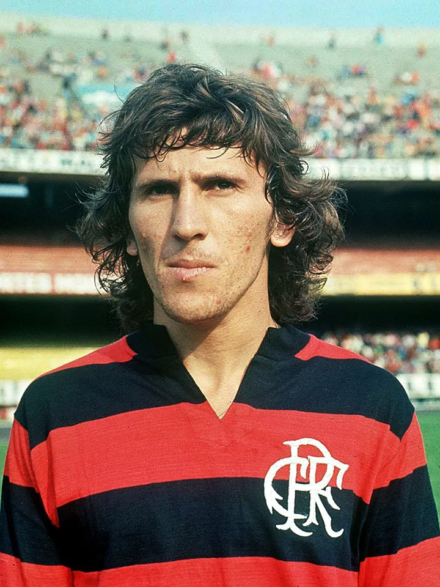
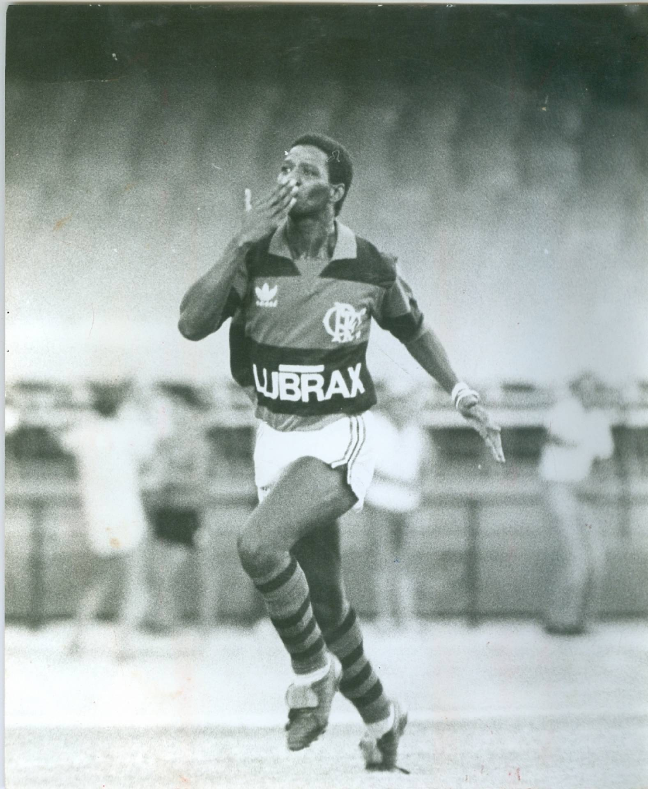
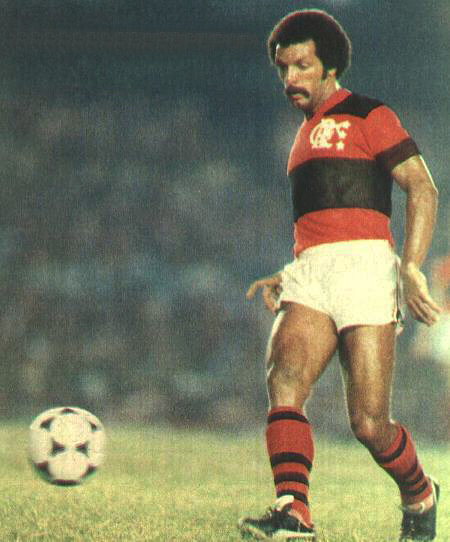

 Zico deixou uma marca lendária no Flamengo, conquistando títulos memoráveis e encantando os torcedores com seu talento incomparável. Sua liderança e habilidade renderam momentos gloriosos, incluindo títulos nacionais e internacionais. Sua passagem é lembrada pela paixão e dedicação em campo, deixando um legado duradouro no clube.  Adílio, durante sua passagem pelo Flamengo, foi um componente vital da equipe, contribuindo com sua habilidade técnica e visão de jogo. Sua presença no meio-campo ajudou o time a conquistar importantes títulos, incluindo o Campeonato Brasileiro e a Copa Libertadores. Adílio é lembrado como um jogador talentoso e comprometido que deixou sua marca na história do clube.  Júnior, uma lenda do Flamengo, brilhou intensamente durante sua passagem pelo clube. Com sua habilidade excepcional e liderança em campo, ele ajudou o time a conquistar diversos títulos, incluindo o Campeonato Brasileiro e a Copa Libertadores. Júnior é reverenciado pelos torcedores como um dos maiores jogadores a vestir a camisa rubro-negra. Retorne para a página inicial.